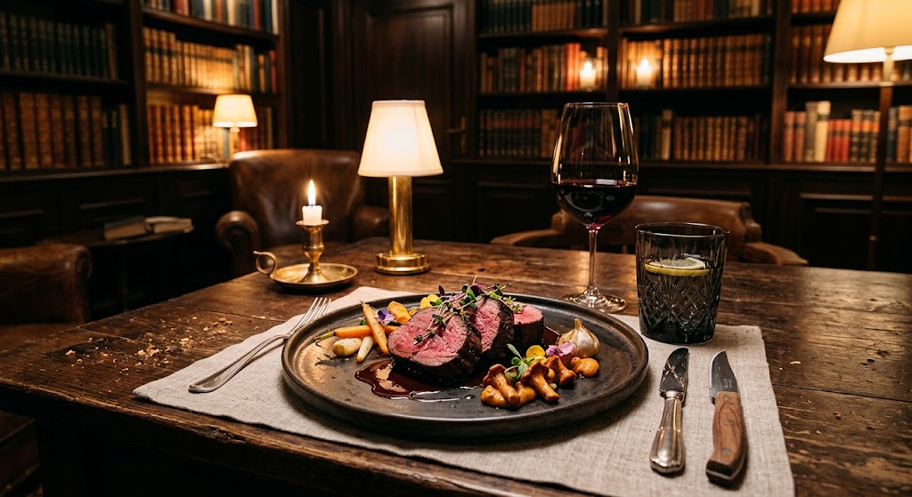

Náš gurmánský zážitek je postaven na nekompromisní kvalitě surovin, poctivé řemeslné přípravě a vytříbené chuti, která podtrhuje celkovou atmosféru večera.
Co by to bylo za večer bez špičkového jídla?
Připravte se na zážitek, který potěší všechny vaše smysly a staví na poctivé řemeslné přípravě a prémiových surovinách.
Podáváme ta nejlepší vyzrálá hovězí masa z ověřených chovů a speciality připravené tak, aby dokonale ladily s temnou atmosférou večera.
Každý chod je servírovaný na těžkém leštěném stole za svitu svíček, doplněný o jemný porcelán a komplety zlatých příborů.
